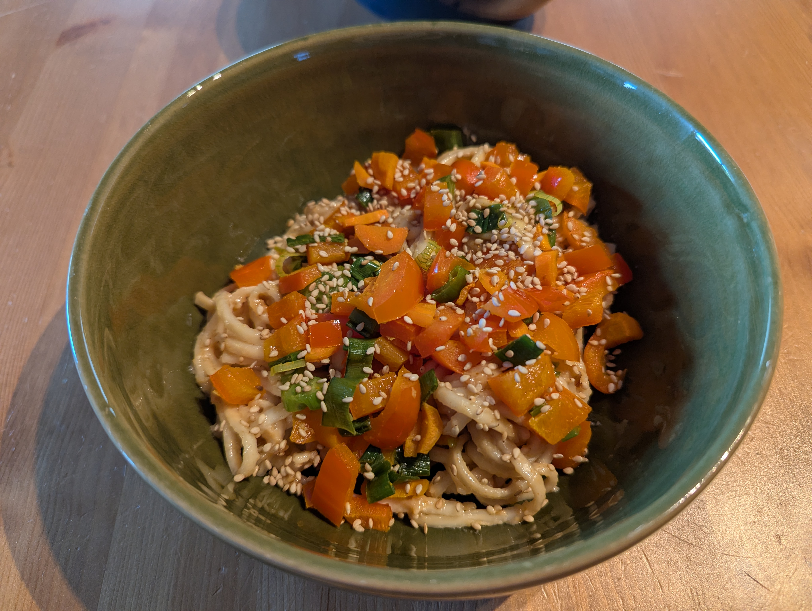

Das Kochbuch für unsere Rezepte
Udon Nudeln mit Erdnusssoße

Insta-Rezept Empfehlung von Katha, njummmiiii.
Zubereitung
1. Zuerst das Gemüse schnibbeln das drüber soll. Kann alles sein was da ist.
Kurz in Olivenöl andünsten und etwas würzen.
1 Paprika
1 Zucchini
1 Karotte
1 kleine Zwiebel
Salz & Pfeffer
Kurkuma
2. Udon Nudeln (2 Portionen) kochen und währenddessen die Soße zubereiten.
2x Udon Nudeln
3. Zuerst die Zwiebel ein bisschen im Sesamöl anrösten und dann die restlichen
Zutaten dazugeben. Wenn es zu dick flüssig ist, mehr vom Nudelwasser dazu.
Sesamöl
2EL Erdnussbutter
1EL Sojasoße
1TL Honig
Chili Pulver
Salz & Pfeffer
4. Dann die Nudeln in die Soße geben, auf einen Teller servieren und das Gemüse obendrauf packen. Unbedingt Sesam dazu!
Sesam